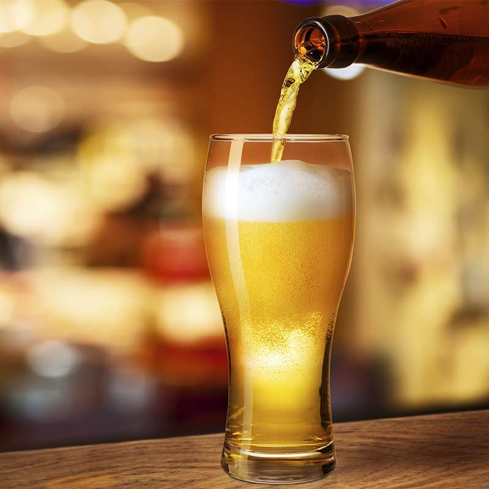

IPA:India Pale Ale. Es el estilo que ha conquistado los corazones de los aficionados a
la cerveza, se trata
de una de las mejores cervezas artesanales.
son cervezas en las que se emplea un mayor volumen de lúpulo. El lúpulo es una flor que transmite
amargor, aroma y sabor a la cerveza.
Las cervezas estilo IPA son cervezas de alta fermentación. Es decir, las levaduras trabajan a más
temperatura que en las cervezas de baja fermentación.

KOLSCH:Una cerveza limpia, fresca, delicadamente balanceada, por lo general con un
carácter muy sutil a frutas
y lúpulos. Maltosidad suave que se conduce a lo largo hasta un final agradablemente bien atenuado y
refrescante.

STOUT: Una sotut era una cerveza fuerte, cuyo nombre se aplicó a las cervezas de tipo
porter más fuertes.
Moderado a fuerte aroma de maltas tostadas, a menudo tienen una cualidad a café tostado o chocolate
oscuro
Generalmente tiene un color negro oscuro, aunque en algunas puede parecer marrón muy oscuro. Espuma
grande, persistente, de color canela
NEIPA:La New England IPA es un tipo de cerveza India Pale Ale muy lupulada pero poco
amarga que destaca por
ser muy turbia, afrutada y sedosa, y que está causando furor
HONEY:Es un estilo de cerveza a la que se le adiciona miel durante el proceso de
fabricación.
De color dorado, cuerpo medio, con un intenso aroma y sabor a miel. Se caracteriza por ser muy fresca,
agradable, de gusto dulce. Ideal para calmar la sed